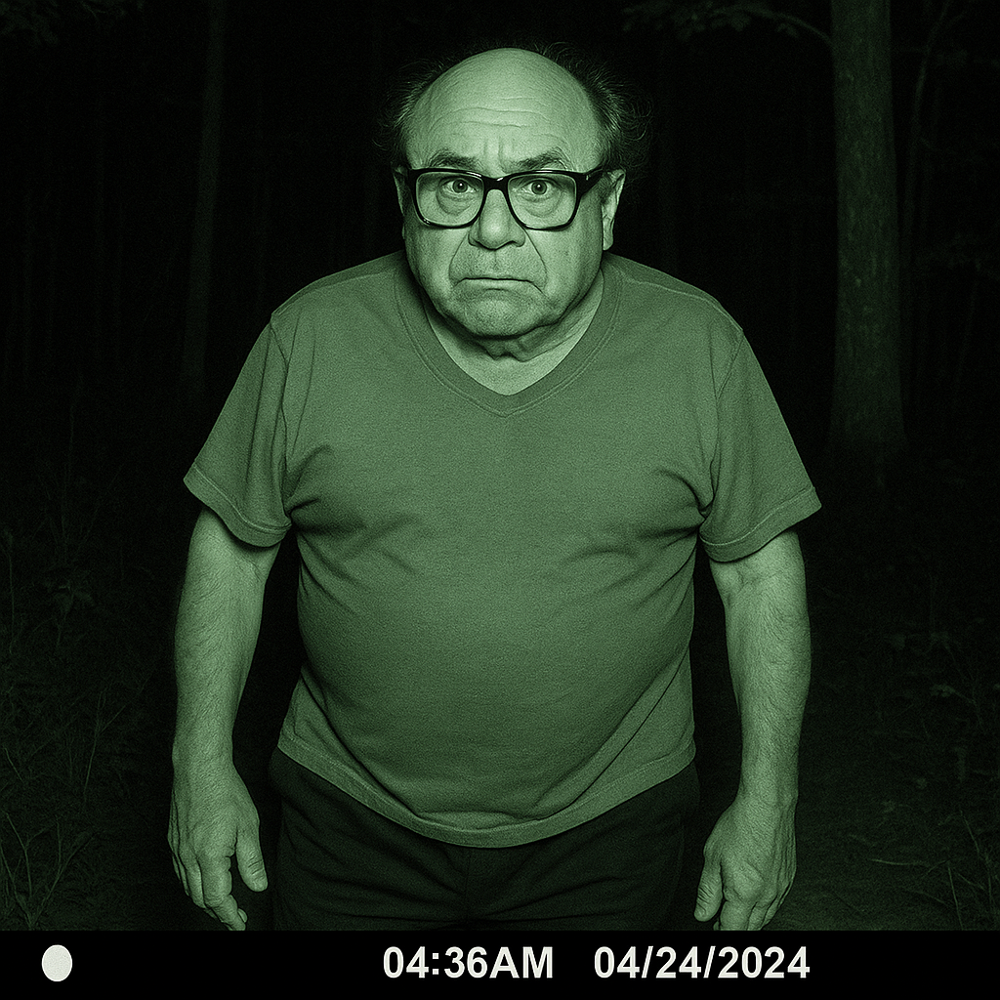

Revolutionary old man technology
Online image generation has changed a lot since 2022. This is how current image generation from DALL-E 3 stacks up against one of my favorites from DALL-E 2. Please ignore any resemblance to a beloved public figure.

Try to guess which is which, not so easy huh? Here is another, made by Google Veo.

I hope these images find you well and make you think about all the great things we have done as a society.